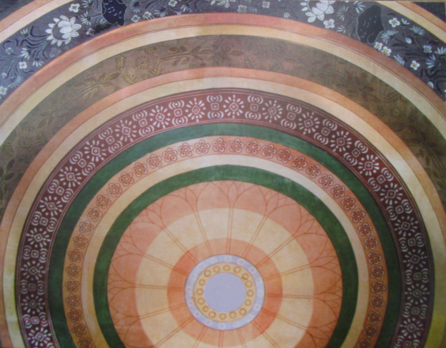
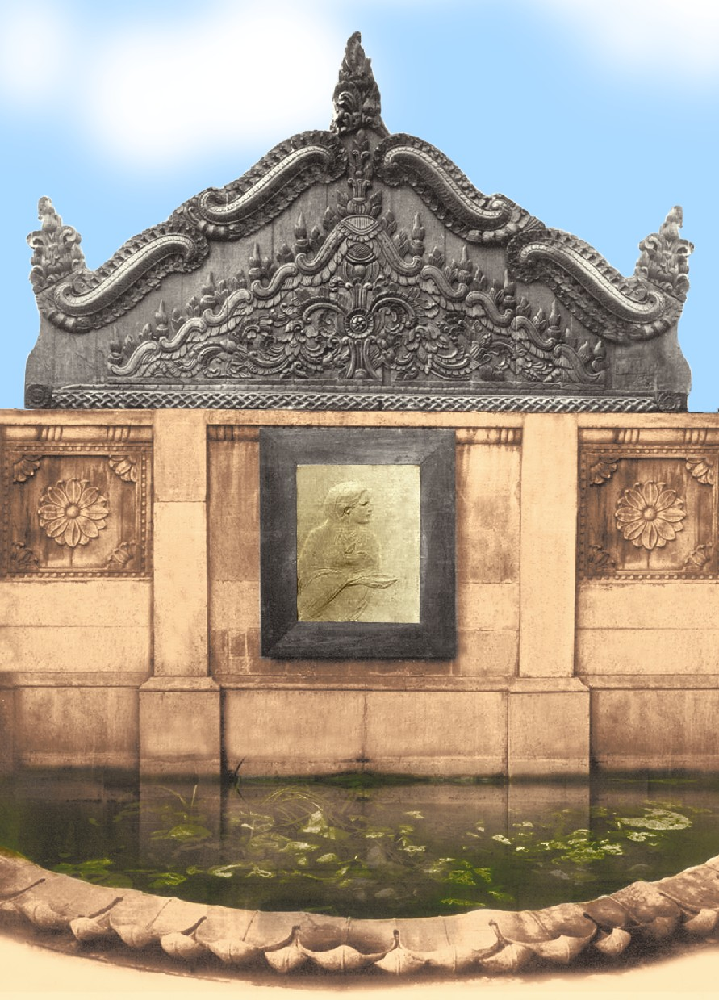

My father and guru Nandalal
Originally written in Bengali by Gauri Bhanja
As far as I remember, I was six or seven years old then. I used to stay with my parents in the ancestral house at Banipur Rajgunj near Howrah. In the vicinity, someone owned a
factory for making tiles. The earth from the Ganges enabled making superior quality tiles. In some tiles, designs of flowers,
birds, and animals had to be made repeatedly with ease – my
father made stencils and molds for them.
Tiles with these designs were embedded in our house in Rajgunj and in the house in Hatibagan, Kolkata, near the Star Theatre. The designs
On the tiles in relief or with elevation depicting beautiful roads still float before my eyes. On my behest,
my father designed a tile in which Hanuman slit open his heart to
reveal Ram and Sita. When he used to make these, my siblings
and I would sit next to him and watch in awe. In winter, when the tile kiln was lit, we used to sit around it and
enjoy the warmth. We, swathed in warm clothes, waited patiently for the kiln to stop burning, so we could take a
look at the decorated tiles – but our impatient minds were not prepared to wait.
Yet another memory is associated with the kiln. In winter, people who sell birds used to visit us. Amongst them, quails (a type of pheasant) used to be common.
We had learnt that those birds were very tasty. We requested that the bird be bought. My father bought the bird, alright, but it resulted in some problems.
The denizens of the kitchen refused to give the bird permission to enter. We were demoralized. On seeing our plight, my father declared that the bird would be
cooked in the kiln, outside our house. We were relieved. With great enthusiasm, we arranged for the spices and vessels. A new pipkin (Hanri) was purchased – it would
be used to make Hanri Kebab. The kiln had some openings to allow ventilation – the pipkin was placed in one such opening to enable cooking. That was a memorable picnic.
The bird was cooked in the kiln, and it turned out so delicious that I still remember the taste today.
My father traveled to Madras shortly afterwards, from where he brought tin rollers and boxes which could be used to make alpanas with chalk dust.
There were holes in the rollers and at the bottom of the boxes. When chalk dust or colored powder was put inside the roller, the dust (or powder)
would fall out of the holes, creating patterns. The box-like container could also be stuffed with powder and struck on the ground to enable patterns
with powder to form. We used to have an old servant named Sonn Buri. She held my father with great regard. On my father’s behest, she would lather
the yard and the area surrounding the grain storage (dhaner gola). Every day in the morning, I would use my tool from Madras to design alpanas.
Those were my first lessons in alpana.
Not only do I not remember having ever being reprimanded by my father, but instead, he used to tolerate our crazy wants and ideas without ever losing his temper.
Let me give an example. My father used to take lessons from Aban Babu (Abanindranath Tagore) in Jorasanko. So he used to travel from Rajgunj to
Ahiritola on a steamer. Aban Babu’s youngest daughter, Surupa, was about my age and a dear friend. Now and then
I would want to go with my father to Jorasanko. It was particularly enticing to travel in a steamer. My father never
expressed displeasure at taking me along. I would play the entire day with Surupa and then come back home with my father to Rajgunj in the evening.
I must have been around eight or nine around that time. I had to spend a lot of time in our house in Hatibagan, Kolkata.
My father had a studio on the ground floor of the house. He used to paint there every morning. I remember many
pictures from that time. Most of his paintings were done using the wash technique. Cakes of color produced in foreign
countries were rubbed against ground glass to make the paint for the wash technique. He used to dip the painting in a tank of water.
Many of his colleagues used to visit to show their work and also to discuss and correct it based on my father’s ideas. Among them,
were Asit Halder, Khitish Majumdar, Sailen De, and others. Our house would be brimming with people on Sundays.

Frescoes were designed by Nandalal Bose and implemented by Suren Kar.

Vinayak Pandurang Karmakar's relief of Sister Nivedita was modelled on Nandalal Bose's painting of "Lady with Lamp"
Both of the above illustrations are obtained from: https://jcbose.ac.in/history-gallery
Two huge paintings for the Bose Science Mandir (Bose Institute) were drawn in this house. One was painted by my father and the
other by uncle Surendranath Kar. My father drew this picture on tussar attached to a wooden frame. The subject of the painting
was a young girl walking along as she played the flute while a boy followed behind with a sword in his hand. It was so huge that
to bring it outside the house, a window with its arch had to be removed to make way. Indeed, my father made many large paintings
after this one, but perhaps because I was young and because the house had to be deconstructed to let it out,
I remembered how large the painting actually was. The subject of my uncle’s picture was a Santhal boy and girl returning home after
work at the end of the day. The boy had a flute in his hand, and they were depicted from behind.
In our house in Hatibagan, my father drew several frescoes. On the second floor, in the western wall of the bedroom, was a Nataraj
fresco approximately 8-10 ft in height. Another big room did not have any windows in the western wall. That wall had five big
niches – each about the size of a door. The middle one was larger than the two on each side. Each niche was converted into a
panel and using several colors, he drew several frescoes, the subjects of which were scenes from the Ramayana. One had Rama and
Lakshman in a boat trying to cross the Saraju river – the river banks had the imprints of the feet of Rama and the sands
turned golden in color. Seeing this, a boatman brought water to Rama and said, “Be careful when you climb into my boat as
I do not want it to turn into gold. If that happens, I will no longer be able to ferry it across the river.” In another
panel was depicted the Haradhanu Bhanga (breaking of Lord Shiva’s divine bow) scene. A third panel showcased the rescue of Ahalya.
The fourth was Rama and Guhak. The fifth one depicted Rama eating a jujube from Sabari. Later, all five of these panels were published
in Ramananda Chattopadhyay’s Krittibasi Ramayana. On the walls next to the staircase leading to the roof was a fresco of
eight-armed Durga. On the edge of the staircase was a one-foot-high statue of a lion made from a mix of cement and carefully collected stones.
On the parapet on the roof were depictions of animal figures as seen in Ajanta murals. I do not recall what color was used
to paint them, but exposure to the elements (sun and rain) had caused them to fade, revealing a mystical aura. My father had
drawn them on his return from the first trip to Ajanta. At the entrance of the house was a huge fresco of Ganesha.
He was adorned with pearls, and if one moved their fingers on them, it felt uneven, exactly like the pearls used as adornments on
the painting of the black girl in Ajanta. I cherished these days from my childhood.
[To be continued in the next volume ...]
Translated by: Haimonti Dutta